Authors: A. Witkowska, M. Dub, P. Sai, P. Tiwari, M. Sakowicz, J. A. Majewski, W. Knap
Type: both · Category: disordered systems and neural networks · PDF: https://arxiv.org/pdf/2605.03778v1
Analysis basis: full PDF text, analyzed in chunks
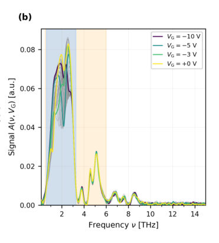
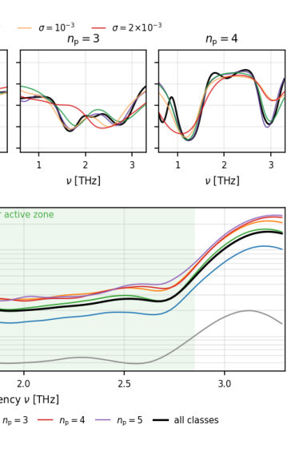
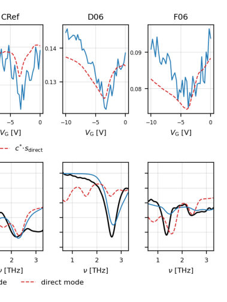
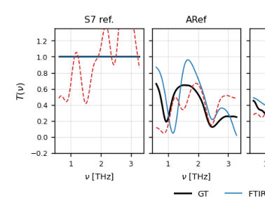
Summary. This paper demonstrates a method to reconstruct THz spectra using a tunable plasmonic-crystal analyzer and a neural network. By replacing traditional interferometers with a computational inversion approach, it enables more compact and cost-effective THz spectroscopy.
Why it may be interesting. not directly relevant
Main problem. The challenge of reconstructing Terahertz (THz) transmission spectra from voltage-dependent intensity signals without using bulky, traditional interferometric setups.
Main result. A neural network achieves significantly lower reconstruction error and fewer spurious peaks compared to Tikhonov regularization, enabling an interferometer-free THz spectroscopy architecture.
Method. A feedforward neural network was trained on a large synthetic dataset of spectra and applied to experimental data from an electrically tunable plasmonic-crystal analyzer.
Model / system. An electrically tunable AlGaN/GaN plasmonic-crystal analyzer featuring a grating gate on a SiC substrate, which uses a 2D electron gas to modulate plasmonic resonances via gate voltage.
Key observables. THz transmission spectra, voltage-dependent intensity, Mean Square Error (MSE), and peak-position Mean Absolute Error (MAE).
Important parameters / regimes. Frequency range of 0.6-3.3 THz, gate voltage range of 0 to -10 V, and measurement temperatures of 70 K.
Assumptions / limitations. The neural network's performance is limited by the training data's ability to represent real-world depth distributions and the weakening of spectral modulation at the edges of the active frequency zone.
Figures summary. Fig 1 shows the analyzer's transmittance and response matrix; Fig 2 displays synthetic reconstruction fidelity; Fig 3 compares signal shapes and NN reconstruction performance; Fig 4 compares NN results against Tikhonov regularization.
Paper structure. The paper introduces the problem of THz reconstruction, describes the plasmonic-crystal analyzer and the neural network architecture/training, presents experimental validation in FTIR and direct modes, and compares the results against classical regularization benchmarks.
We demonstrate machine learning (ML) based reconstruction of terahertz transmission spectra using an electrically tunable grating-gate AlGaN/GaN plasmonic-crystal analyzer. The analyzer encodes the transmission spectrum into a voltage-dependent intensity, which is then inverted by an ML algorithm. A feedforward neural network trained on a synthetic dataset is validated experimentally on four samples in standard Fourier Transform Infrared (FTIR) mode and in direct (fixed-mirror) acquisition mode. The network achieves a mean square error (MSE) of the reconstruction of 0.015 in FTIR mode and 0.038 in direct mode, correctly identifying six out of seven ground-truth resonances in each mode. Against a first-difference Tikhonov regularization baseline, the mean reconstruction error is reduced 3.6 times in FTIR mode and 1.55 times in direct mode, with fewer spurious peaks and lower peak-position errors. Voltage-tunable plasmonic filtering combined with neural-network inversion establishes an interferometer-free architecture for THz spectral reconstruction.
Authors: Sushanth Varada, Aksel Kobiałka, Ankita Bhattacharya, Patric Holmvall, Annica M. Black-Schaffer
Type: theory · Category: strongly correlated electrons · PDF: https://arxiv.org/pdf/2605.03859v1
Analysis basis: full PDF text, analyzed in chunks
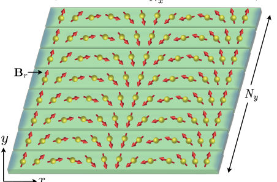
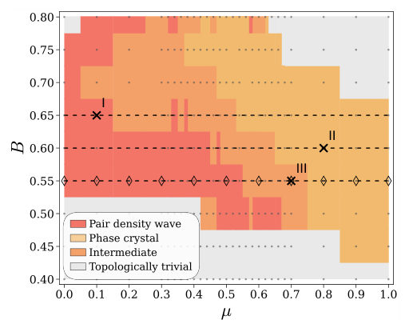
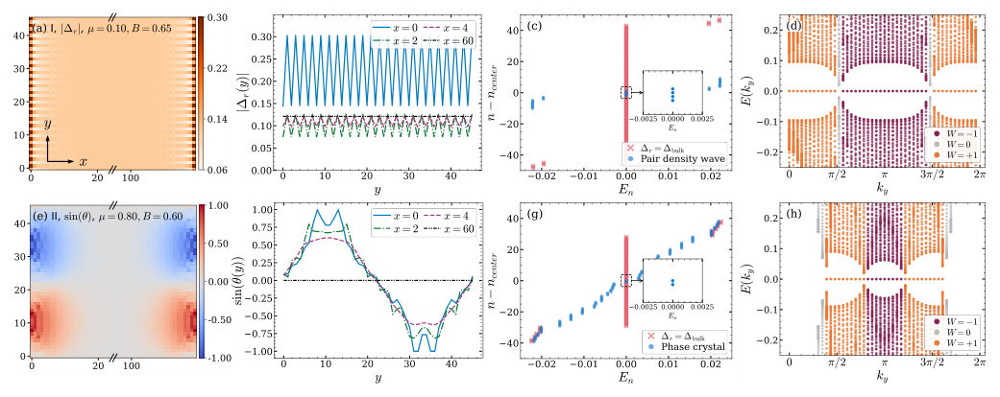
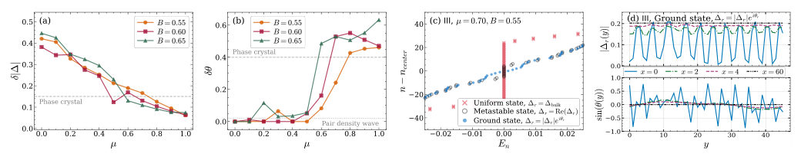
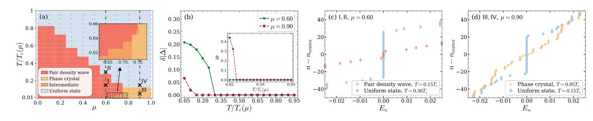
Summary. This paper demonstrates that Majorana flat bands in topological superconductors inherently drive the system toward non-uniform superconducting states like pair density waves and phase crystals. It reveals how the topology of the system dictates the specific type of symmetry breaking that occurs to lower the system's free energy. The study also establishes the different thermal stabilities of these emergent phases.
Why it may be interesting. not directly relevant
Main problem. The study investigates the emergence and competition of non-uniform superconducting phases, specifically pair density waves and phase crystals, driven by the instability of Majorana flat bands in topological superconductors.
Main result. The researchers find that the uniform superconducting state is unstable at zero temperature, giving way to a pair density wave (amplitude modulation) or a phase crystal (phase modulation) to gap out Majorana states, with the PDW being more thermally robust than the phase crystal.
Method. Self-consistent Bogoliubov-de Gennes (BdG) calculations are performed on a 2D tight-binding model, using iterative schemes and energy-based arguments to identify the ground state.
Model / system. A 2D array of magnetic adatoms with a helical magnetic texture (spin spirals) deposited on an s-wave superconducting substrate, modeled via a 2D tight-binding BdG Hamiltonian in the BDI topological class.
Key observables. Superconducting order parameter amplitude and phase, Majorana edge state energy distribution, winding numbers, and spontaneous loop currents.
Important parameters / regimes. Chemical potential (mu), magnetic field strength (B), temperature (T), and spiral pitch vector (q).
Assumptions / limitations. The study is restricted to weak topological systems with lattice translation and chiral symmetries; the magnetic texture is modeled as coplanically arranged spin spirals.
Figures summary. Figure 1 shows the experimental setup schematic; Figure 2 presents the zero-temperature phase diagram; Figure 3 displays spatial distributions and band structures for PDW and phase crystal states; Figure 4 characterizes phase transitions via RMS deviations; Figure 6 and 7 illustrate spatial order parameter modulations and spontaneous current loops.
Paper structure. The paper introduces the physical platform, defines the BdG Hamiltonian and symmetry class, presents the zero-temperature phase diagram and the mechanisms for PDW and phase crystal formation, analyzes the temperature dependence of these phases, and concludes with the implications for topological superconductivity.
Zero-energy flat bands within the superconducting gap can give rise to competing ordered phases. We investigate such phases in topological superconductors based on the magnetic adatom platform hosting a flat band of Majorana edge states. Our self-consistent calculations of the superconducting order parameter show the emergence of both a pair density wave with edge-localized amplitude modulations and a phase crystal characterized by edge-localized phase modulations. These two phases lower the free energy of the system by gapping out the Majorana flat band, as dictated by winding numbers, which are primarily tuned by the chemical potential. In fact, at zero temperature the uniform superconducting solution with Majorana flat band never survives and the phase diagram features a pair density wave, while the order parameter transitions into a phase crystal when amplitude modulations are insufficient to hybridize all the Majorana states. A broad intermediate region connects these two phases with comparable modulations in both amplitude and phase. At finite temperatures, the pair density wave survives up to around 80% of the bulk superconducting transition temperature, while the phase crystal only appears at lower temperatures and the intermediate region is strongly suppressed. Our findings establish the ubiquity of emergent nonuniform superconducting phases and their temperature-dependent behavior in topological superconductors.
Authors: Bidisha Mukherjee, Supratik Mukherjee, Mrinmay Sahu, Bhagyashri Giri, A C Gracia Castro, G Vaitheeswaran, Konstantin Glazyrin, Goutam Dev Mukherjee
Type: both · Category: strongly correlated electrons · PDF: https://arxiv.org/pdf/2605.03593v1
Analysis basis: full PDF text, analyzed in chunks
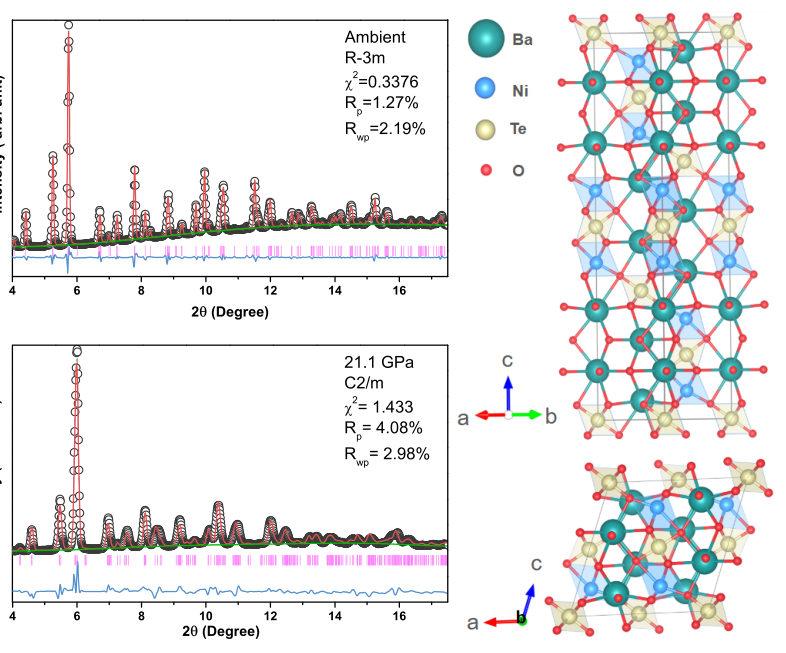
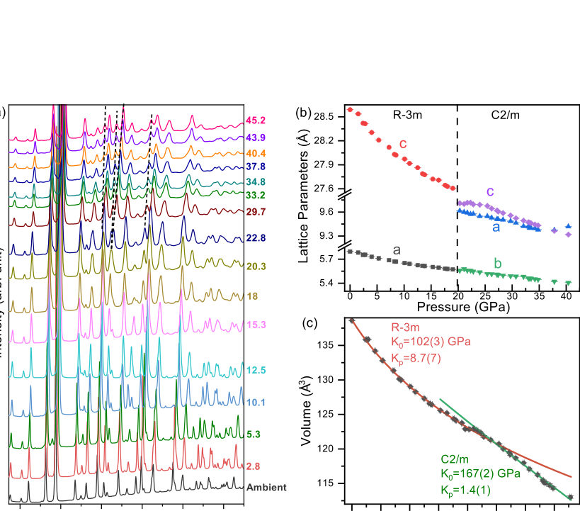
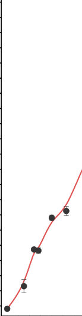
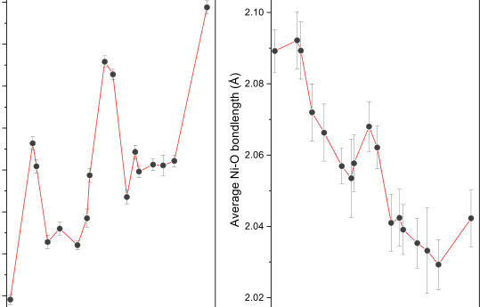
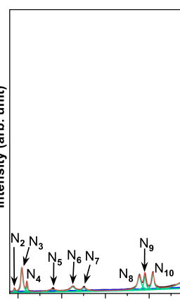
Summary. This paper demonstrates that applying high pressure to the double perovskite Ba2NiTeO6 induces both an electronic transition from a direct to an indirect bandgap and a structural transition to a monoclinic phase. The study highlights how pressure-induced changes in the band structure can drive anomalous vibrational behavior through enhanced electron-phonon coupling.
Why it may be interesting. not directly relevant
Main problem. The study investigates the pressure-induced evolution of structural, electronic, and magnetic properties in the double perovskite Ba2NiTeO6 (BNTO). It specifically seeks to explain anomalous Raman spectroscopic behavior and identify structural phase transitions under high pressure.
Main result. A structural phase transition from rhombohedral R3m to monoclinic C2/m occurs at ~22.8 GPa, accompanied by a significant increase in bulk modulus. Additionally, a transition from a direct to an indirect bandgap occurs at ~1 GPa, which explains Raman anomalies via enhanced electron-phonon coupling.
Method. The researchers used high-pressure synchrotron X-ray diffraction (XRD) and micro-Raman spectroscopy alongside Density Functional Theory (DFT) simulations using the GGA-PBEsol and GGA+U (U = 4.0 eV) approaches.
Model / system. The physical system is the double perovskite Ba2NiTeO6 (BNTO), a 12-layered crystal structure featuring face-sharing and corner-sharing NiO6 and TeO6 octahedra.
Key observables. Lattice constants (a, c), c/a ratio, unit cell volume, NiO6 distortion index, Ni-O bond length, Raman mode frequencies, FWHM, bandgap energy (direct vs. indirect), and Ni magnetic moment.
Important parameters / regimes. Pressure regimes of ~1 GPa (electronic transition), ~11 GPa (increased ordering), and ~22.8 GPa (structural transition); Bulk modulus (K0) values of 102 GPa and 167 GPa.
Assumptions / limitations. DFT calculations utilized the GGA-PBEsol parametrization and the Hubbard U correction to account for Ni-3d electron correlation.
Figures summary. Fig 1: Rietveld refinement and unit cell representations; Fig 2: XRD patterns and volume-pressure plots; Fig 3: Evolution of the c/a ratio; Fig 4: Pressure evolution of NiO6 distortion and Ni-O bond length; Fig 10: Bandgap energy variation with pressure.
Paper structure. The paper introduces the material and its properties, details the experimental and computational methodologies, presents the structural evolution via XRD, analyzes vibrational anomalies via Raman spectroscopy, discusses electronic and magnetic changes via DFT, and concludes with a summary of the pressure-induced transitions.
This study explores the pressure evolution of the double perovskite Ba$_2$NiTeO$_6$ by employing experimental and computational techniques. For the study of structural and vibrational properties, synchrotron X-ray diffraction (XRD) and micro-Raman spectroscopic experiments at high-pressures were carried out. As a complementary study, DFT simulations of the structural properties as a function of pressure were performed to support and explain the experimental findings. Furthermore, the electronic and magnetic properties as a function of pressure were investigated using DFT. Our study reveals a structural phase transition from a rhombohedral $R\bar{3}m$ to a monoclinic $C2/m$ phase at high pressure, accompanied by a significant increase in bulk modulus. Certain anomalies were observed in Raman mode frequencies at lower pressures of about 1 GPa, indicating changes in the electronic structure with a modification from direct to indirect bandgap in the sample. A minimum in the Raman mode full-width-half-maximum (FWHM) at about 11 GPa, coincides with an increase in ordering in the sample, indicated by a drop in the distortion index of Ni-O$_6$ octahedra as well as a discontinuity in the $c/a$ ratio.
Authors: Shuichiro Ozawa, Izumi Takahara, Teruyasu Mizoguchi
Type: both · Category: disordered systems and neural networks · PDF: https://arxiv.org/pdf/2605.03515v1
Analysis basis: full PDF text, analyzed in chunks
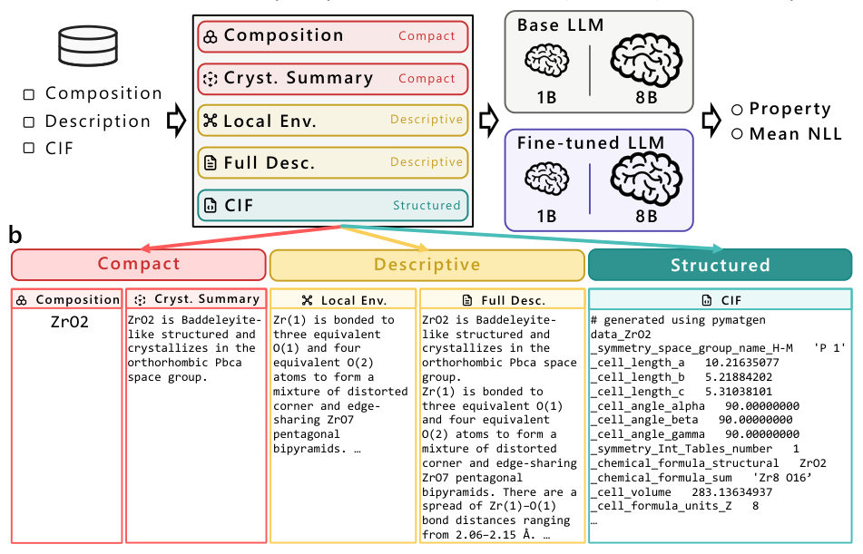
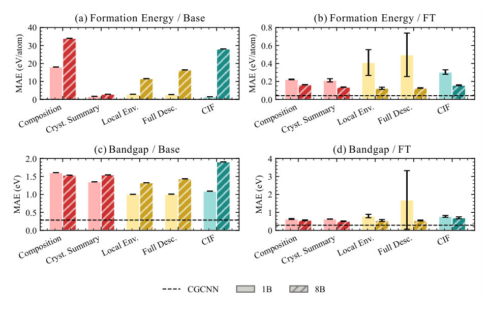
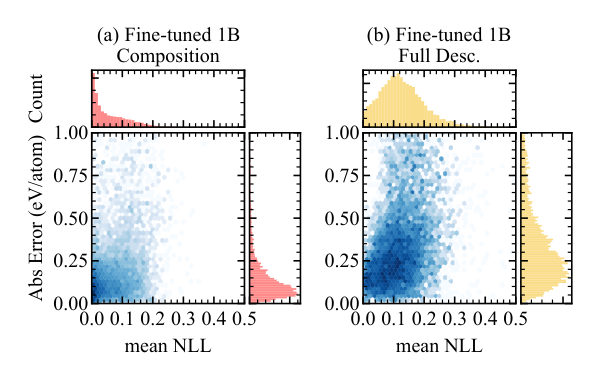
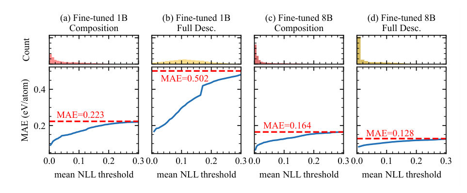
Summary. This paper explores how the size of a language model and the complexity of the input text influence its ability to predict physical properties of crystals. It finds that larger models can leverage detailed natural language descriptions better than smaller ones and demonstrates that the model's own prediction probability (NLL) can be used to estimate prediction uncertainty.
Why it may be interesting. not directly relevant
Main problem. Investigating how LLM scale and input representation (from chemical formulas to detailed text) affect the accuracy and reliability of predicting materials properties like formation energy and bandgap.
Main result. Optimal input representation is scale-dependent, with 1B models favoring compact inputs and 8B models handling complex text; additionally, mean NLL in fine-tuned models serves as an effective confidence indicator.
Method. Fine-tuning Llama-3.2-1B and Llama-3.1-8B models using LoRA on various input modalities including chemical composition, crystal summaries, and CIF files.
Model / system. The study uses Llama-based Large Language Models (1B and 8B parameters) applied to inorganic crystal structures, specifically targeting formation energy and bandgap predictions.
Key observables. Formation energy per atom (eV/atom), bandgap (eV), Mean Absolute Error (MAE), and Mean Negative Log-Likelihood (mean NLL).
Important parameters / regimes. LoRA rank (r=32), learning rate (1e-4), and various input modalities (Composition, Crystal Summary, Local Environment, Full Description, CIF).
Assumptions / limitations. The study assumes that numerical property prediction can be treated as a discrete token generation task and that NLL of the integer part of predicted values is a reliable proxy for uncertainty.
Figures summary. Figure 1 shows the experimental pipeline and input examples; Figure 2 displays MAE across scales and input types; Figure 3 shows the correlation between NLL and prediction error; Figure 4 demonstrates the effect of NLL-based filtering on accuracy.
Paper structure. The paper introduces the problem of LLM-based materials prediction, details the experimental setup (models, LoRA, and input types), presents results on accuracy and scale-dependence, evaluates NLL as a confidence metric, and discusses limitations regarding computational cost.
Large language models (LLMs) are increasingly applied to materials science. However, the relationship between prediction accuracy, input representation, and model scale remains unclear, and reliable methods for assessing prediction confidence have not yet been established. In this study, we fine-tune two Llama models of different scales (1B and 8B) using low-rank adaptation (LoRA) on an inorganic crystal structure dataset. We systematically evaluate five input representations, namely chemical composition, crystal summary, local environment description, full text description, and crystallographic information files (CIF), for formation energy and bandgap prediction. Our results show that the optimal input representation depends on model scale. The 1B model performs better with compact representations, whereas the 8B model maintains high accuracy even with longer natural-language descriptions and CIF inputs. Across both model scales, crystal summaries that include space-group information consistently outperform composition-only inputs, indicating that symmetry information serves as a robust and informative feature. We further analyze the relationship between prediction error and the mean negative log-likelihood (mean NLL) of tokens corresponding to predicted numerical values. While no clear correlation is observed in base models, fine-tuned models exhibit a consistent trend in which lower mean NLL corresponds to smaller prediction errors. This result suggests that mean NLL can serve as a practical confidence indicator without requiring additional training. These findings demonstrate that both input representation and model scale play critical roles in LLM-based materials property prediction, and that mean NLL provides an effective and computationally efficient measure of prediction confidence.
Authors: Ilan Shalish
Type: theory · Category: other · PDF: https://arxiv.org/pdf/2605.03765v1
Analysis basis: full PDF text, analyzed in chunks
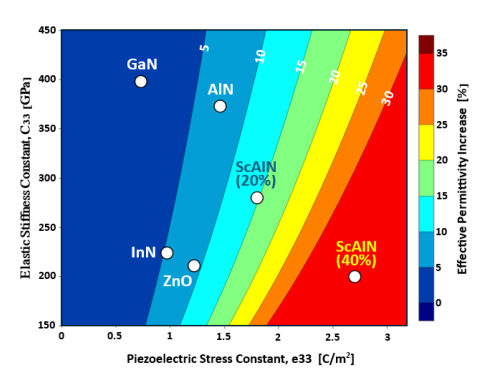
Summary. This paper resolves why Scandium Aluminum Nitride (ScAlN) shows a much higher dielectric constant in experiments than predicted by theory. It demonstrates that massive internal electric fields physically stretch the crystal lattice, an effect called electromechanical inflation. This finding is crucial for accurately modeling next-generation high-power semiconductor devices.
Why it may be interesting. not directly relevant
Main problem. Resolving the discrepancy between theoretical predictions (epsilon ~ 11.7) and experimental observations (epsilon ~ 15) of the dielectric permittivity in ScAlN.
Main result. The 'high-K anomaly' is explained as 'electromechanical inflation,' where internal electric fields induce macroscopic lattice strain via the inverse piezoelectric effect, increasing effective permittivity.
Method. Analytical derivation using coupled electromechanical equations of state with stress-free mechanical boundary conditions.
Model / system. The system is ScAlN/GaN heterostructures, specifically ultra-polar wurtzite semiconductor junctions characterized by high internal electric fields.
Key observables. Effective permittivity (epsilon_eff), electromechanical coupling coefficient (Kt^2), and out-of-plane strain (S33).
Important parameters / regimes. Scandium content (x), elastic stiffness (C33), piezoelectric stress constant (e33), and electric field magnitude (> 3 MV/cm).
Assumptions / limitations. The model assumes stress-free mechanical boundary conditions in the out-of-plane direction (unconstrained surface).
Figures summary. Figure 1 provides a theoretical parameter space map showing the magnitude of electromechanical inflation and the relative error introduced by neglecting lattice strain across different wurtzite nitrides.
Paper structure. The paper identifies the high-K discrepancy, critiques the rigid-lattice approximation, introduces the electromechanical coupling model, provides quantitative validation against experimental data, and discusses implications for device physics.
We resolve the long-standing discrepancy between theoretical material constants and experimental observations of the dielectric response in scandium aluminum nitride (ScAlN). While first-principles calculations of the rigid lattice predict a permittivity of about 11.7, experiments consistently report values near 15. We demonstrate that this "high K" behavior is a manifestation of electromechanical inflation, where the enormous internal electric fields of polar heterostructures induce macroscopic lattice strain via the inverse piezoelectric effect. By applying stress-free mechanical boundary conditions to the coupled equations of state, we derive an analytical relation for the effective permittivity: epsilon_eff=epsilon_33^S + e_33^2/C_33. This model quantitatively accounts for experimental observations across the ScAlN alloy range and defines the fundamental limit of the rigid-lattice approximation in highly polar semiconductors.
Authors: L. Braginsky, M. V. Entin
Type: theory · Category: other · PDF: https://arxiv.org/pdf/2605.03530v1
Analysis basis: full PDF text, analyzed in chunks
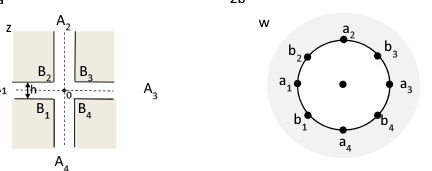
Summary. This paper provides a theoretical framework to calculate how electrons tunnel through intersections of very narrow quantum wires. By using conformal mapping, the authors show that while the absolute transmission decreases with wire length, the ratio of transmission amplitudes remains constant, which is vital for modeling quantum interferometers.
Why it may be interesting. not directly relevant
Main problem. Calculating the intrinsic transmittance amplitudes for T-like and X-like intersections of narrow quantum wires in 2D electron systems.
Main result. The authors derived analytical expressions for the wave function amplitudes and established that the ratio of transmission amplitudes is independent of the exponential decay caused by wire length.
Method. The Schrödinger equation is reduced to the Laplace equation, and the complex geometry of the wire crossings is solved using conformal mapping and multipole potentials.
Model / system. The system consists of narrow quantum wire intersections (T-form and X-form) in a 2D electron gas, operating in the sub-wavelength regime where wires act as tunnel conductors.
Key observables. Transmittance amplitudes (t_ij), total transmittance (T), and conductance (G_ij).
Important parameters / regimes. Wire width (h or d_0), electron wavelength, and the geometric ratio s = H/h.
Assumptions / limitations. Wire widths are smaller than the electron wavelength; the system is potential-free; and the transition from 2D seas to 1D channels is adiabatic.
Figures summary. Figure 1 shows sketches of 3-wire (T-like) and X-like crossings and their relationship to the conformal mapping plane; Figure 2 depicts a single quantum wire.
Paper structure. The paper establishes the validity of the Laplace approximation, defines boundary conditions for decaying waves, applies conformal mapping to solve the geometry, and provides analytical solutions for T and X-form crossings.
The transmittance of intersection between narrow quantum strips is studied. It is assumed that strip widths are less than the electron wavelength, so that they are tunnel conductors. In this assumption the Schrödinger equation is reduced to the Laplace one, which can be solved by the conformal mappings. The transmittances of T-like and X-like wire crossings are found.